1. Would you consider yourself...
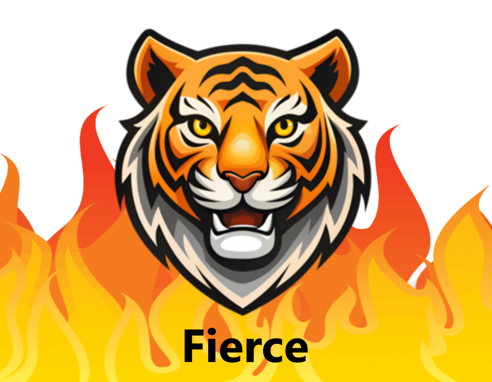
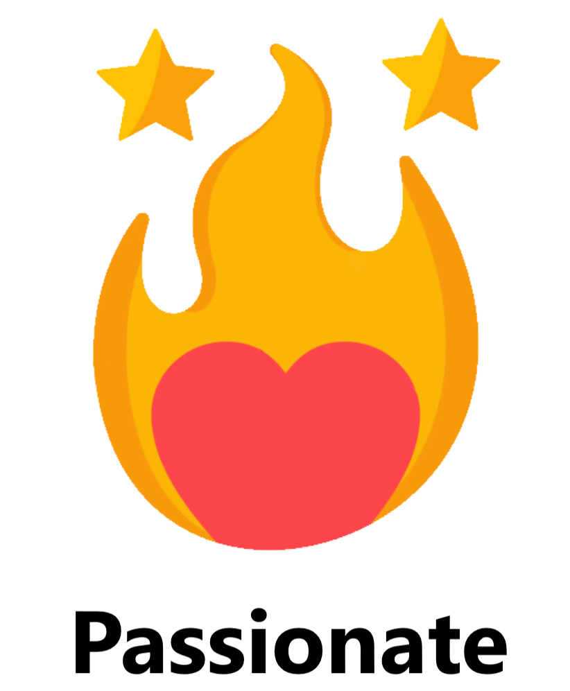
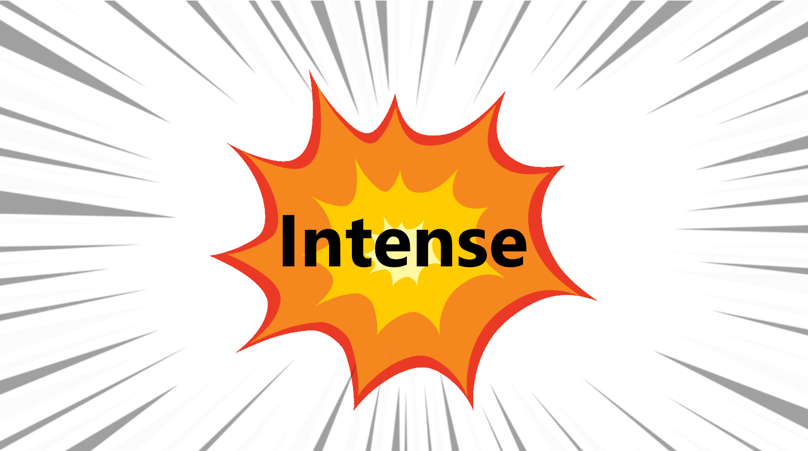
2. What weapon would you choose to fight demons with?


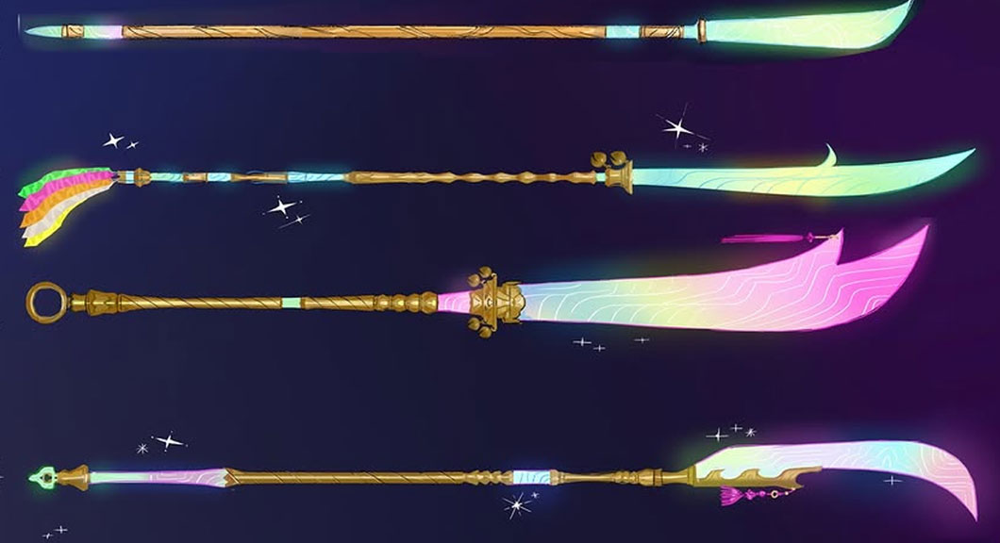
3. Are you more laid back, energetic or both?
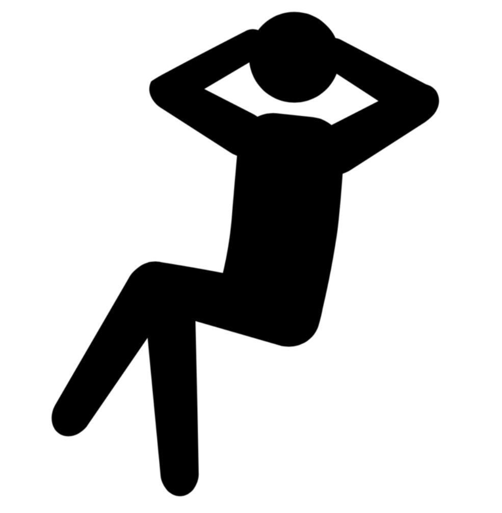
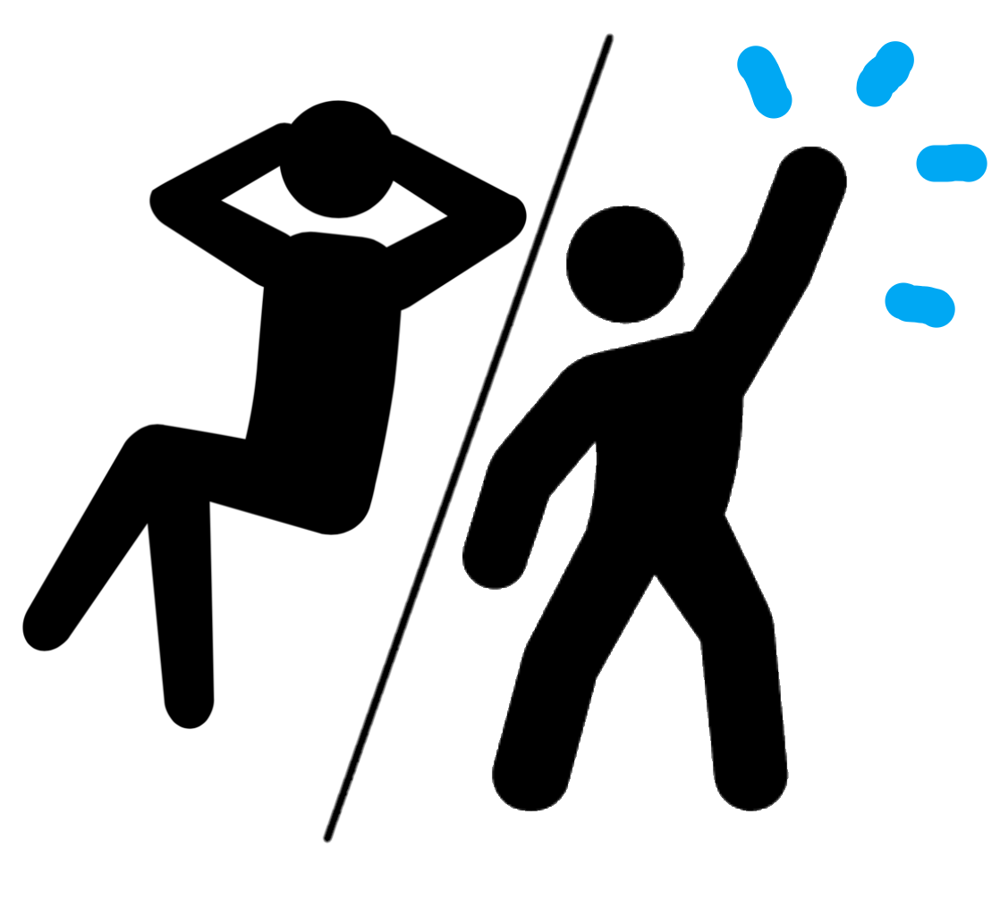
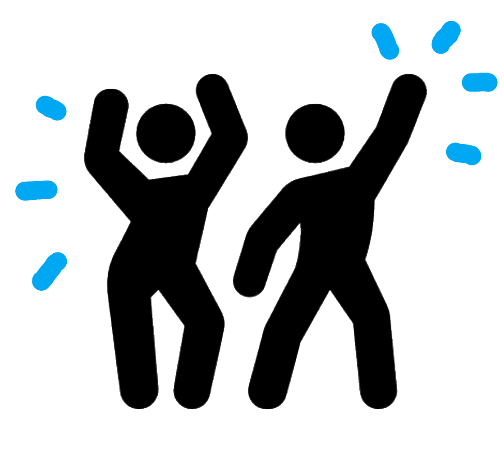
4. Which would you rather dress like?
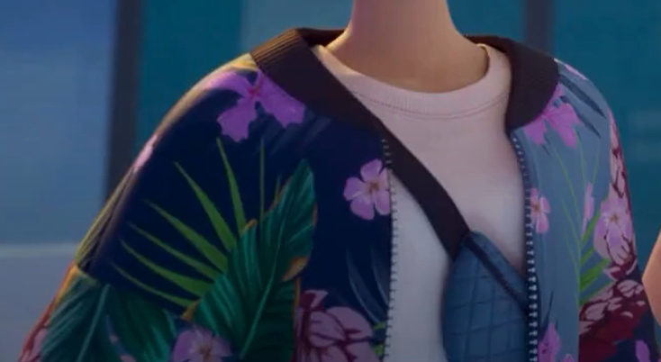
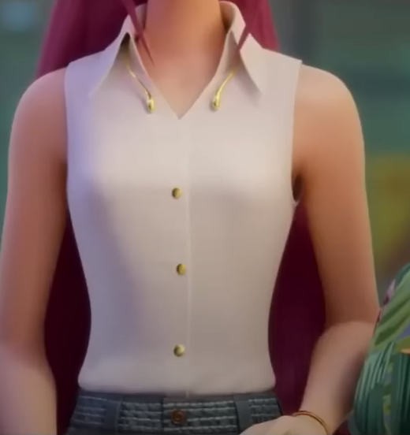
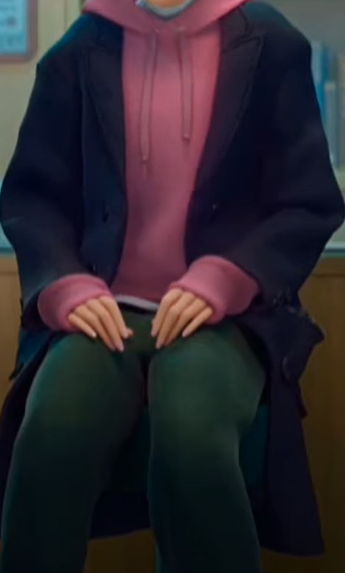
5. What scares you the most?
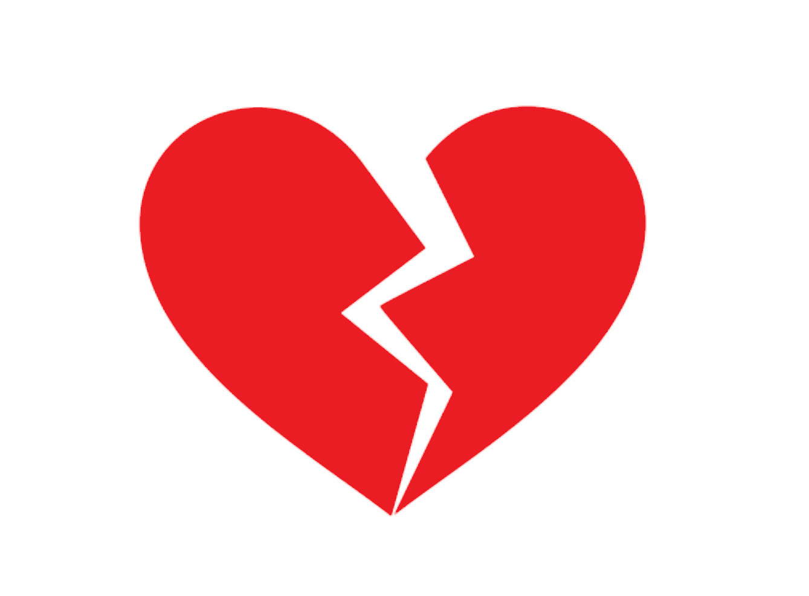
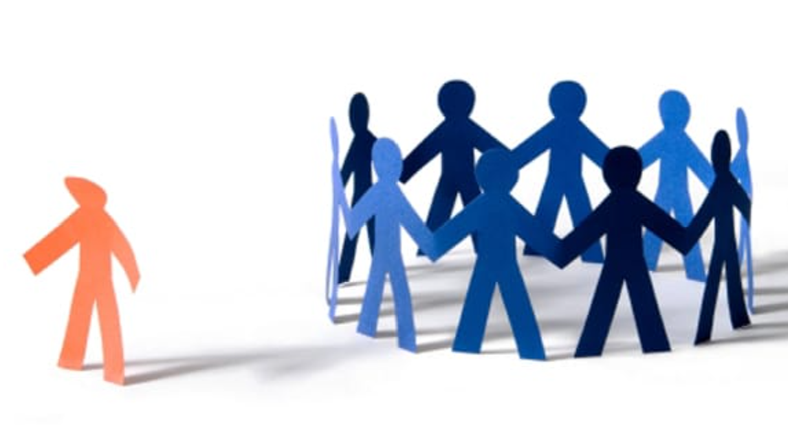
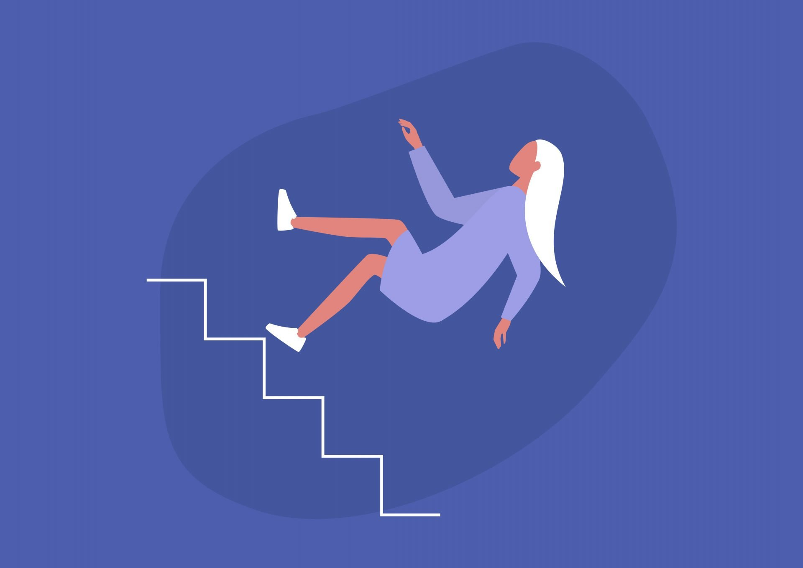
6. Which hairstyle would you choose?


7. How would you describe yourself?
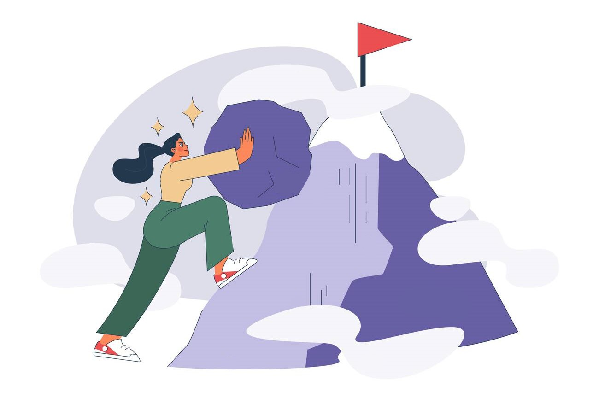
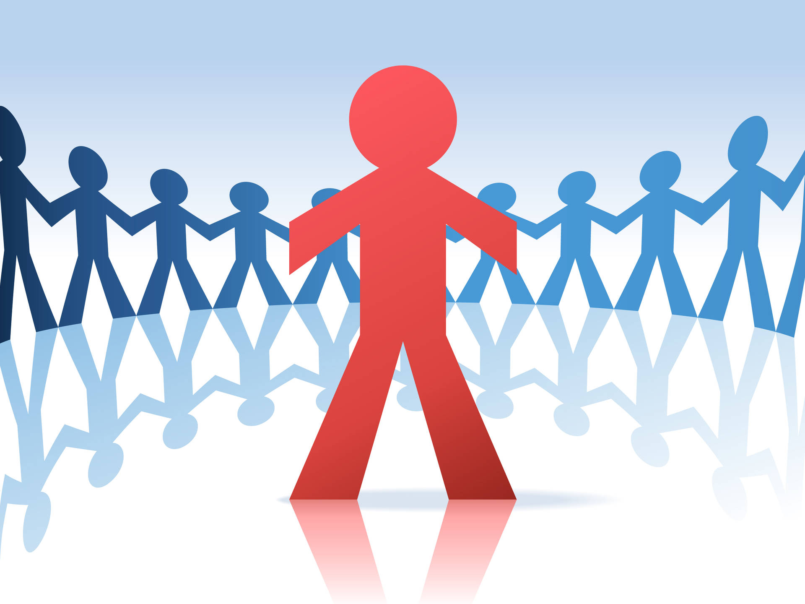
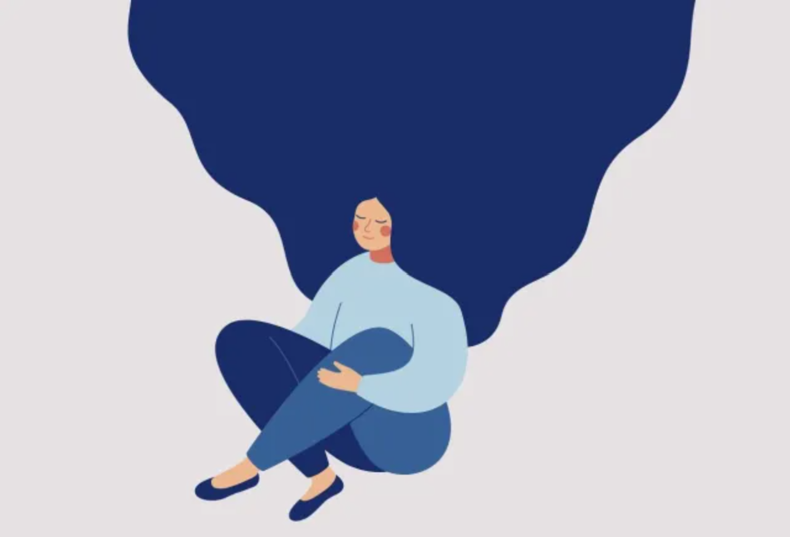